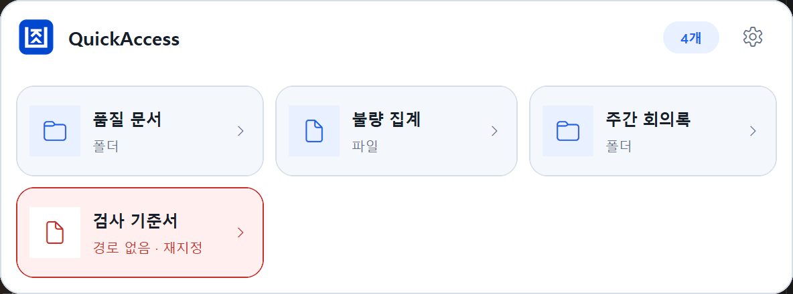
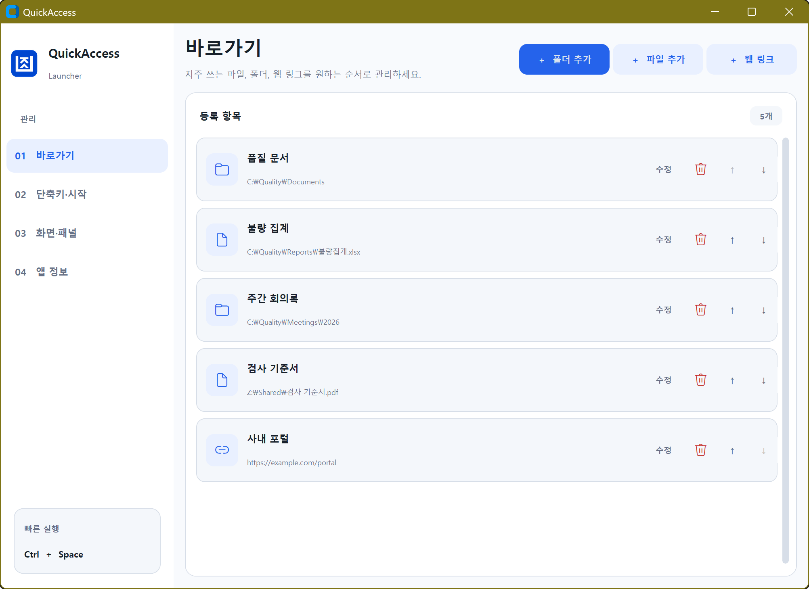

01
깊은 폴더를 매번 탐색
탐색기를 열고 여러 폴더를 거쳐 같은 업무 위치를 반복해서 찾아갑니다.
QuickAccess는 자주 쓰는 폴더, 파일, 웹 링크를 하나의 패널에 모아 전역 단축키 한 번으로 여는 가벼운 Windows 상주형 런처입니다.

QuickAccess는 거대한 검색 도구가 아니라, 매일 되풀이되는 “어디 있었지?”를 줄이는 데 집중합니다.
탐색기를 열고 여러 폴더를 거쳐 같은 업무 위치를 반복해서 찾아갑니다.
즐겨찾기, 바탕화면, 최근 파일과 메신저 기록을 오가며 필요한 항목을 찾습니다.
작업 중인 창을 벗어나 검색하고 다시 돌아오는 과정에서 맥락이 끊깁니다.
절대적인 시간 절감 수치보다, 찾기 위해 거쳐야 하는 창과 판단 단계를 줄이는 방식입니다.
| 비교 항목 | 도입 전 | QuickAccess 도입 후 |
|---|---|---|
| 찾는 방법 | 탐색기·바탕화면·브라우저 즐겨찾기를 각각 확인 | Ctrl + Space로 한 패널에서 선택 |
| 업무 시작 | 폴더 구조를 기억하거나 검색어를 다시 입력 | 업무 이름으로 저장된 카드를 바로 실행 |
| 새 항목 등록 | 위치와 이름을 따로 정리하거나 바로가기를 수동 생성 | 탐색기에서 Ctrl + Shift + Space로 빠르게 등록 |
| 항목 관리 | 파일·폴더·링크가 서로 다른 위치에 분산 | 설정 화면에서 이름, 순서, 경로를 한 번에 관리 |
| 경로 변경 | 깨진 바로가기를 찾아 새로 만들기 | 경고 카드에서 새로운 위치로 즉시 재지정 |
패널 호출부터 등록, 복구, 개인화까지 일상적인 Windows 사용 흐름에 맞췄습니다.
형식이 다른 업무 항목도 같은 카드 목록에서 한 번에 열 수 있습니다.
마우스가 있는 모니터의 작업 영역 안에 패널을 배치해 시선 이동을 줄입니다.
활성 탐색기의 선택 항목 또는 현재 폴더를 별도의 복사 과정 없이 등록합니다.
이동·삭제된 항목은 상태를 표시하고, 같은 카드에서 새로운 위치를 선택할 수 있습니다.
시스템·밝게·어둡게 모드와 2~5열 배치, 두 전역 단축키를 직접 조정합니다.
사용자 계정으로 조용히 시작하고, 중복 실행과 설정 파일 충돌을 방지합니다.
빠른 실행 패널은 작게, 환경 설정은 항목을 한눈에 관리할 수 있게 구성했습니다.
예시 화면의 샘플 경로입니다. 카드 이름과 유형을 확인하고, 마우스 또는 키보드로 원하는 항목을 실행합니다. 이미지를 누르면 원본 크기로 볼 수 있습니다.

예시 화면의 샘플 경로입니다. 바로가기 목록, 화면 스타일, 패널 열 수, 단축키와 Windows 자동 실행을 한곳에서 관리합니다. 이미지를 누르면 원본 크기로 볼 수 있습니다.
실제 QuickAccess의 흐름을 재현한 자동 재생 예시입니다. 각 장면은 일시정지하거나 처음부터 다시 볼 수 있습니다.
현재 작업 화면을 벗어나지 않고 패널을 호출한 뒤 원하는 항목을 실행합니다.
파일 탐색기에서 항목을 선택하고 표시 이름만 확인하면 빠른 실행 목록에 등록됩니다.
도입 판단에 필요한 강점뿐 아니라 현재 배포 방식과 지원 범위의 제한도 공개합니다.
업무용 도구에서 중요한 권한, 저장 위치와 네트워크 사용 조건을 숨기지 않습니다.
일반 Windows 사용자 계정으로 실행합니다.
키보드 전체를 기록하는 전역 훅을 사용하지 않습니다.
바로가기 정보는 %APPDATA% 아래 JSON에 저장됩니다.
직접 켠 경우에만 GitHub 공개 릴리스 정보를 요청합니다.
GitHub 공식 Release에서 QuickAccess.exe를 받습니다.
최종 보관할 폴더에 둔 뒤 한 번 실행합니다.
자주 쓰는 파일, 폴더와 웹 링크를 원하는 순서로 추가합니다.
Ctrl + Space를 눌러 패널을 열고 원하는 항목을 선택합니다.
네. QuickAccess.exe를 원하는 폴더에 두고 실행하면 됩니다. 다만 설정, 백업과 로그는 사용자 AppData에 저장되며, Windows 자동 실행을 켜면 현재 사용자 시작프로그램 레지스트리에 실행 경로를 등록합니다.
정상입니다. 전역 단축키를 받기 위해 시스템 트레이에 상주합니다. 완전히 종료하려면 트레이의 QuickAccess 아이콘을 우클릭하고 ‘종료’를 선택하세요.
기존 버전을 트레이에서 완전히 종료하고 새 EXE를 최종 위치에서 한 번 실행하면, 자동 실행이 켜져 있는 경우 해당 새 경로로 등록을 복구합니다.
트레이에서 종료하고 환경 설정에서 Windows 자동 실행을 끈 뒤 EXE를 삭제합니다. 개인 설정까지 지우려면 %APPDATA%\QuickAccess와 %LOCALAPPDATA%\QuickAccess 폴더를 선택적으로 삭제하면 됩니다.
QuickAccess Launcher v1.2.3 · Windows 10/11 x64 · Portable EXE